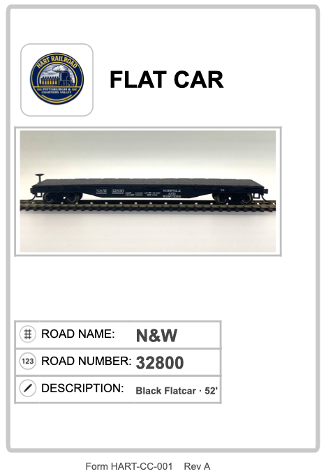
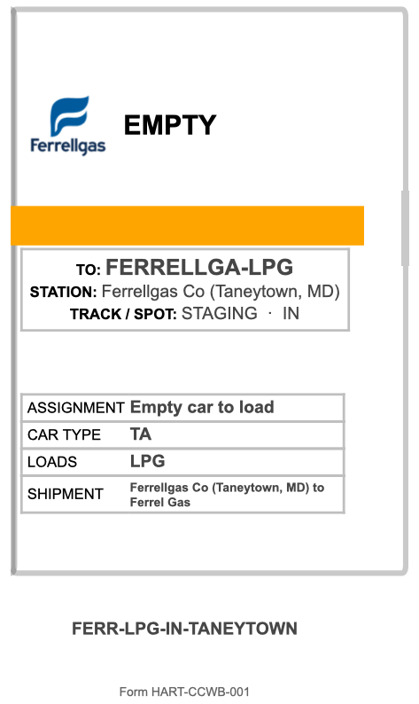
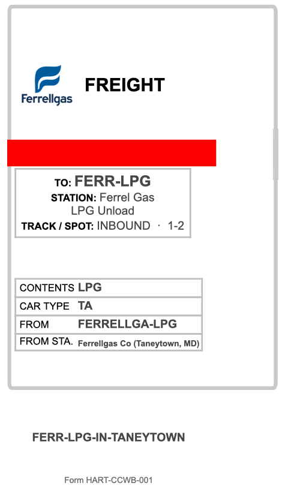
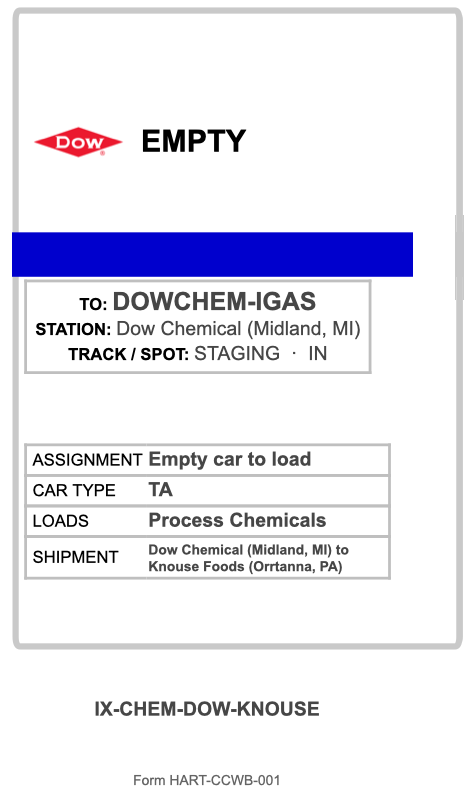
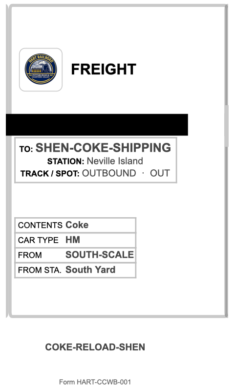
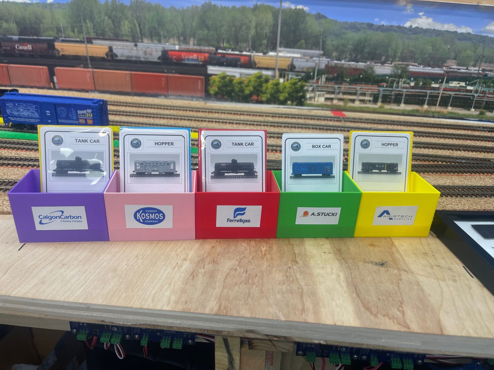

Car Cards & Waybills
Every car on the layout has a car card that says what it is, and a waybill that says where it goes next. Here is what they look like on Neville Island and how to read them on your first night.

The car card: what the car is
There is one card for each car on the roster.
- Header: the kind of car (flat car, tank car, hopper, box car).
- Photo: the actual model, so you can pick it out of a cut at a glance.
- Road name and number: the reporting marks painted on the car. Match these to the car on the track.
- Description: color, length, or anything else that tells two similar cars apart.
The waybill: where it goes
Waybills are printed the same size as the car card. Each shipment prints as a pair of waybills that share a shipment code at the bottom:
- EMPTY sends an empty car to the place that loads it. It reads Assignment: Empty car to load and lists what the car will Load.
- FREIGHT sends the loaded car to the place that unloads it. It lists the Contents and where the load came From.
One shipment, two waybills
Shipment FERR-LPG-IN-TANEYTOWN moves propane for Ferrellgas. The EMPTY bill sends a tank car (TA) off the layout to Ferrellgas in Taneytown, MD, to load LPG. The FREIGHT bill brings the car back loaded to the Ferrellgas unloading racks on the island.


Reading a waybill, top to bottom
- EMPTY or FREIGHT beside the customer's logo: is the car going to be loaded, or unloaded?
- The color bar is the destination color. It tells you which block the car belongs in and which train takes it. See Destination colors.
- TO / STATION names the customer and the place.
- TRACK / SPOT says exactly where the car goes, such as INBOUND · 1-2. STAGING means the customer is off the layout and the car leaves (or arrives) through interchange. Spot numbers are on the industry spot sheets.
- Car type uses the short codes on the crew paperwork: TA is a tank car, HM a hopper.
- The shipment code at the bottom ties the EMPTY and FREIGHT bills of one shipment together.
Two more you will see


Your first session, step by step
- Start with your crew sheet. It lists your job's steps and the colors you handle. Session paperwork
- Find the car. Match the road name and number on the car card to the car on the track. The photo helps when several cars look alike.
- Read the color bar on its waybill. That is the car's next destination and its block. The Yardmaster builds cuts by color and hands each train its colors: blue to D749; yellow, green, purple, red and pink to NVL; black to CK1; orange to the NVL return.
- Read TO and TRACK / SPOT for the exact place, and check the spot sheet for that industry before you set the car out.
- Check EMPTY or FREIGHT. An empty goes where it will be loaded; a load goes where it will be unloaded. Both bills for one shipment carry the same code.
- Coke goes over the scale. Shenango hoppers are weighed at South Yard. Good cars continue; a car that fails gets a reload bill back to Shenango.
- Not sure? Ask. The Yardmaster and the Dispatcher are there to help, and anything unusual is covered at the briefing.

At the layout
Each island industry has its own car card box, printed in the industry's destination color and labeled with its name: purple Calgon Carbon, pink Kosmos Cement, red Ferrellgas, green A. Stucki, yellow Aristech.
The waybills come out of STS, the traffic program behind each session. How it decides what moves is in Setting up car movement on the HART Railroad.
Related: Destination colors · Industry spot sheets · Industries · Rolling stock